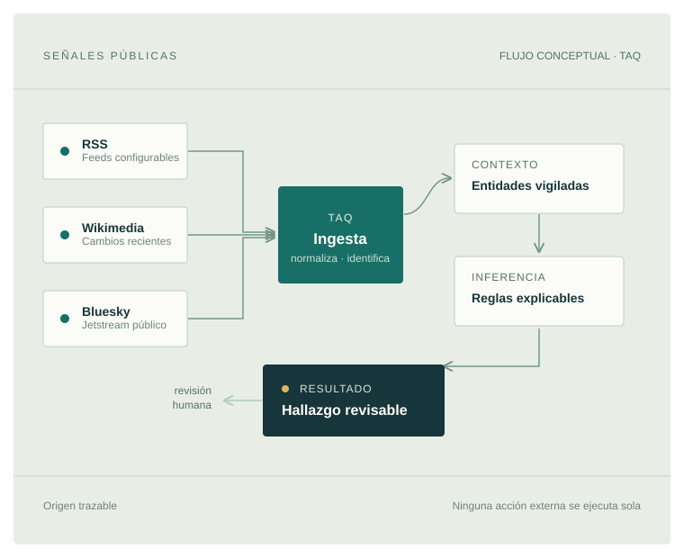

Proyecto independiente · En desarrollo
Cada señal,
con contexto.
TaQ conecta información pública con lo que importa: tus entidades vigiladas, reglas explicables y hallazgos que una persona puede revisar.
Gratuito por propósito. Todavía no es un servicio público desplegado.

Una herramienta en construcción
Menos ruido.
Más relación.
Internet produce señales todo el tiempo. Por separado, un cambio en un feed o una publicación dice poco. Cuando se relaciona con una marca, un dominio u organización que te importa, puede convertirse en algo que merece atención.
TaQ está construyéndose para recorrer ese camino de forma trazable: desde fuentes públicas hasta hallazgos contextualizados, con reglas explícitas y revisión humana antes de cualquier acción.
El flujo, paso a pasoDel dato a la decisión
Una cadena que
conserva el porqué.
El objetivo no es automatizar a ciegas. Es dejar claro de dónde vino una señal, por qué se relacionó con algo vigilado y qué revisión necesita.
- 01Fuentes
Ingerir
Conectores reciben señales públicas de RSS, Wikimedia y Bluesky.
- 02Entidades
Contextualizar
Una señal se compara con entidades vigiladas y el contexto registrado para ellas.
- 03Reglas
Inferir
Reglas explícitas y versionadas ayudan a explicar qué patrón se detectó.
- 04Revisión humana
Coordinar
El resultado puede convertirse en un hallazgo revisable y una acción pendiente de aprobación.
- 05Mejora controlada
Aprender
El feedback propone mejoras gobernadas; los cambios requieren revisión, no se aplican solos.
Estas cinco etapas describen la dirección del producto. Su implementación y validación todavía están en curso.
Transparencia del proyecto
Desarrollo activoLo que ya existe.
Lo que falta.
TaQ ya reúne piezas reales del motor: conectores, transporte de eventos, persistencia, API, reglas, hallazgos y un flujo de aprobación. Aún no se ha demostrado como conjunto listo para uso público.
La validación de extremo a extremo, el endurecimiento operativo y las garantías de seguridad y privacidad siguen siendo trabajo pendiente. Este sitio presenta el proyecto, no ofrece una plataforma en producción.
En el código hoy
- Conectores RSS, Wikimedia y Bluesky
- Normalización, deduplicación y entrega de eventos
- Componentes de contexto, reglas y hallazgos
- API implementada (operatividad pendiente de validar), CLI, observabilidad local e infraestructura Compose
Próximos frentes
- Validar los recorridos E2E y recuperación con CI
- Resolver migraciones y operación de servicios
- Completar revisión de seguridad, privacidad y retención
- Medir calidad y carga antes de habilitar uso público
La presencia de código para una etapa no significa que esté validada ni lista para producción. Sin fecha prometida; primero, evidencia.
La inteligencia útil no debería empezar con una factura.
TaQ se construye con la intención de ofrecerse gratuitamente. No está pensado como un producto en venta ni como un plan comercial. La prioridad es que su propósito, sus límites y su funcionamiento puedan entenderse con claridad.
AXM lo desarrolla de forma independiente. El alcance público y las condiciones finales se definirán cuando el motor haya superado las validaciones que todavía faltan.
Construir con evidencia
Una señal aislada
es solo el principio.
Volver al comienzo TaQ · Inteligencia contextual defensiva · Proyecto gratuito en desarrollo